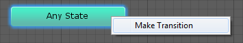

UNITY - Introduction to 2D Games UNITY - Introduction to 2D Games
This tutorial covers intro topics to making a 2D game in Unity. BASICS OF 2D: Start with a 2D project to avoid some steps! Or, if starting with a Unity 3D Scene: Hit the 2D button at Scene top to lock out the Z-axis, and convert all PNGs from Texture to Sprite. Unity Inspector: set PNG art as “Sprites” and set "Order in Layer" to decide placement: PAINTING BACKGROUNDS: Paint bitmaps (Photoshop, PyxelEdit) or vectors (Flash, Illustrator). Making a 2D Platformer PART 1: BACKGROUNDS IN UNITY PART 2: CREATE PLATFORMS COLLIDERS PART 3: BASIC 2D PLAYER CHARACTER PART 4: ANIMATED 2D PLAYER CHARACTER PART 5: ADDING PICKUPS PART 6: COIN PICKUP INTERACTIVITY PART 7: UI AND SCORING PART 8: ADDING DEBUG.LOG |
|
PART 1: BACKGROUNDS IN UNITY: a. Move copies of the provided PNGs into the Project > Assets folder. b. Select each PNG, and in the Inspector: c. Drag each background sprite into the Hierarchy, one at a time to avoid creating a sequence. d. With each Sprite selected in the Hierarchy: PART 2: CREATE PLATFORM COLLIDERS: a. To make platform art areas collide-able, create new Empty GameObjects in the Hierarchy. b. To each add Component > Physics 2D > Box Collider 2D. You can create just one and [Ctrl] or [Cmd]+[d] to make easy copies. Name them in the Inspector! c. Each of these colliders can be transformed (Scale by setting BoxCollider2D size, and hit [W] to move and [E] to rotate) to fit the image of platforms in the art. Colliders will be invisible unless their Game Object is selected in the Hierarchy. PART 3: BASIC 2D PLAYER CHARACTER: For a basic static (non-animated) Player Character:
d. Add to Hierarchy and in Inspector set Order in Layer = a high number (100, if you want the character to be foremost). e. Add Component > Physics 2D > Box Collider 2D, and reduce size. f. Add Component > Physics2D > RigidBody 2D, and under Constraints turn on Freeze Rotation Z. g. Create a new C# script named PlayerControl, add to character with the following movement, jumping, and flipping methods in the Update function:
PART 4: ANIMATED 2D PLAYER CHARACTER (MORE ADVANCED):
c) SLICE THE SPRITESHEET: Hit [Sprite Editor]. In the upper-left open “Slice”  . .
|

d) ADD PLAYER: Open the Spritesheet twirly in the Project to see the slices as frames. e) SET ANIMATION CLIPS: 1. Save the first clip file with name mouse_idle.anim. See it added to list below "Preview." 2. We want to put the individual frames from the Project to just below the clip name in the Animation window to add them to the clip timeline (in this case, "mouse_idle" frames are #1 and #2). Click the twirly on the left to see the keyframes as pictures. Drag up frame #1, then frame #2, then frame #1 again to create a loop. 3. Move the keyframes in the timeline to set your timing. For the three idle frames (pose 1, pose 2, pose 1 again) set them to 0, 10, and 20. 4. Click on the word "mouse_idle" in the rolldown, choose "Create New Clip." Repeat steps 1-3 for all intended character motions (mouse_run, mouse_jump, etc.): d) Select the Player in the Hierarchy. In the Inspector note the new Animator (named for Player), created automatically when Animation clips were made. 1. Doubleclick Animator in Project to open the Mecanim State Machine. 2. Link up states with transitions (RightClick a state and choose Make Transition, then click on destination):  mouse_idle -> to -> mouse_run mouse_run -> to -> mouse_idle Any State -> to -> mouse_jump mouse_jump -> to -> mouse_idle 3. Create parameters in the upper-left corner of the State Machine: a Trigger named "jump" and a Bool named "run," etc. 4. Select each transition and in the Inspector add parameters: a. To [Any State -> to -> mouse_jump] add the "jump" Trigger b. To [mouse_idle -> to -> mouse_run] add the "run" Boolean (set to true) c. To [mouse_run -> to -> mouse_idle] add the "run" Boolean (set to false) And disable Has Exit Time on the "run" transitions. f) Add the following movement script to the animated player. This will include commands to play the animation, with a basic Play command:: anim.Play("run"); and anim.Play("jump"); ...or a more advanced, condition-specific command: anim.SetBool( "run", true); and anim.SetTrigger( "jump"); |
| using UnityEngine; using System; using System.Collections; public class PlayerControlAnimated : MonoBehaviour { public float speed = 0.2f ; public string axisName = "Horizontal"; public float jump = 1; public Animator anim; void Start () { anim = gameObject.GetComponent<Animator> (); } void Update () { //movement code if (Input.GetKey(KeyCode.LeftArrow) || Input.GetKey(KeyCode.RightArrow)) { transform.position += transform.right * Input.GetAxis(axisName)* speed; anim.SetBool("walk", true); } else { anim.SetBool("walk", false); } //jump code if (Input.GetKey(KeyCode.UpArrow)){ Vector3 position = this.transform.position; position.y += jump / 4; this.transform.position = position; anim.SetTrigger("jump"); } anim.SetFloat("speed", Mathf.Abs(Input.GetAxis(axisName))); //flip character based on movement direction if (Input.GetAxis (axisName) < 0){ Vector3 newScale = transform.localScale; newScale.x = 1.0f; transform.localScale = newScale; } else if (Input.GetAxis (axisName) > 0){ Vector3 newScale =transform.localScale; newScale.x = -1.0f; transform.localScale = newScale; } } } |
|
g) Once these bold-face changes are added to the script, drag the Animator Controller into the new script slot in the Inspector. PART 5: ADDING PICKUPS:
PART 6: COIN PICKUP INTERACTIVITY: To be a PickUp, the coin should do the following when the player touches it: make a sound, disappear, and add to the score.
DOUBLING NOTE: If the audio plays twice (and, later, the score registers two hits per coin) this is because the colliders hit twice before the object is destroyed. We need to disable the collider when first impacted. Add this script to OnTriggerEnter2D above the AudioSource Play:
PART 7: UI AND SCORING: To provide scoring feedback, we need two new things: (1) A graphic way to display the score (such as UI Text) (2) an empty GameObject containing a public script for managing the score. [A] Start by creating an Empty G.O.: Doubleclick the script to open in your IDE. NOTE the critical “using” namespace for UI at the top:
[B] Create a Canvas Text object: GameObject > UI > Text (NOTE: Will not be visible in Scene view, only in the Game view). PosX= -280, PosY= 190, Width= 250, Height= 80 [C] Finally, add three things to the PickUps script: 1. Add a private variable and a new Start method:
2. Add this line into the OnTriggerEnter2D method:
PART 8: ADDING DEBUG.LOG Not sure why certain behavior is occurring? Add a "hook" to the debug log! For example, in the PickUps script above, right after the scoring part of the OnTriggerEnter2D method, you can add this to see how many times the collider is activated:
DoubleClick the lower-left corner of the Unity Editor to open the Console and view the log as you play. Tutorial by Jason Wiser, Madwomb.com |